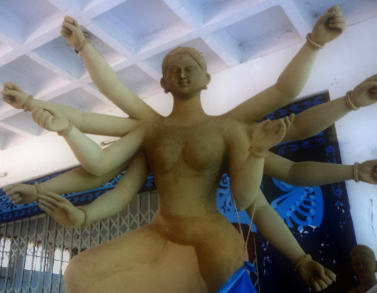

প্রচ্ছদকাহিনী :
পরম্পরা :
উৎসব :
song - গীত :
আনুষঙ্গিক :
চিত্রকলা :
ট্রেভেলগ :
স্বাস্থ্য :
অন্তরে অন্দরে :
পরম্পরা - যা দেবী সর্বভূতেষূ মাতৃরূপেণ সংস্থিতা
রামকৃষ্ণ মিশনের সার্বজনীন দুর্গোৎসব বাংলাদেশের সর্বাধিক পরিচিত ধর্মীয় উৎসব। এখানের পূজায় অনাড়ম্বর ও ভাবগাম্ভীর্যপুর্ণ আনুষ্ঠানিকতার রূপ দেখা যায়। মঠে প্রতিবছর ঐতিহ্য অনুযায়ী পালিত হয়ে আসা দুর্গাপূজার বিভিন্ন অঙ্গ ও আনুষ্ঠানিকতা নিয়ে তথ্য দিয়েছেন মিশনের মহারাজ স্থিরাত্মানন্দ।

পূজা শুরু হওয়ার প্রায় একমাস আগে থেকে পূজার পূর্বপ্রস্তুতি নেয়া হয়। প্রতিমা রামকৃষ্ণ মিশনেই নির্মিত হয়। শ্রমজীবী বলে অন্যত্র প্রতিমা নির্মান নিয়ে কারিগরদের উপর মিশন কর্তৃপক্ষের কোন নিষেধাজ্ঞা থাকেনা। চক্ষুদানের সময় পূজারি প্রাণপ্রতিষ্ঠা করেন।
শৃংখলার সাথে মিশনের মাঠে পূজার আয়োজনের উপর কর্তৃপক্ষের সজাগ দৃষ্টি থাকে। স্বেচ্ছাসেবক হিসেবে কর্তব্যরত থাকেন আশ্রমের ছাত্ররা ।
বিশুদ্ধ সিদ্ধান্ত পত্রিকা অনুযায়ী তিথি অনুসারে দুর্গাপূজা শুরু হয়। ষষ্ঠী থেকে দশমী পূজার মূল পর্ব।
মহাষষ্ঠীঃ চাঁদের ষষ্ঠ তিথিতে শুরু হয় মহাষষ্ঠী। কল্পারম্ভ, বোধন, আমন্ত্রণ আর অধিবাস এই চার নিয়েই মূলত ষষ্ঠীর আনুষ্ঠানিকতা।
কল্পারম্ভ
পুজার কর্ম –পরিকল্পনাকে বলা হয় কল্পারম্ভ । কল্পারম্ভে ঘট স্থাপন হয়।
ঘট স্থাপন
একে কল্পারম্ভের ঘট বলে। । বিশ্বাস করা হয় শরীর যেসব উপাদানে তৈরি, এর প্রতীকী হিসেবে ঘটে পানি, নারিকেল,আম্রপল্লব ইত্যাদি দেয়া হয় সাধকের হৃদয়ের প্রতীক হল ঘট; এর পানিতে যেমন উপাদানগুলোর প্রতিবিম্ব পড়ে, তেমনি সাধকের হৃদয়েও পরমাত্মার প্রতিচ্ছবি পড়ে।
বোধন
বেলগাছের তলায় সন্ধ্যাবেলা দেবীর বোধন হয় । বোধন শব্দের অর্থ বোধ উৎপাদন। মাতৃভাবে ঈশ্বরকে আরাধনার বোধ উৎপাদনই হল বোধন।। ঈশ্বরের লিঙ্গান্তর হয়না, ঈশ্বর আর মানুষের সম্পর্ক কখনো ধরা হয়েছে সখা-বন্ধু হিসেবে, কখনো প্রভু-দাস হিসেবে, রক্ষাকর্তা-পাতক হিসেবে। তবে মায়ের সাথেই মানুষের সবচেয়ে কাছের সম্পর্ক বলে সার্বজনীন ভাবে ঈশ্বর মাতৃরূপেই সুপ্রাচীনকাল থেকে পূজিত হয়ে এসেছেন।